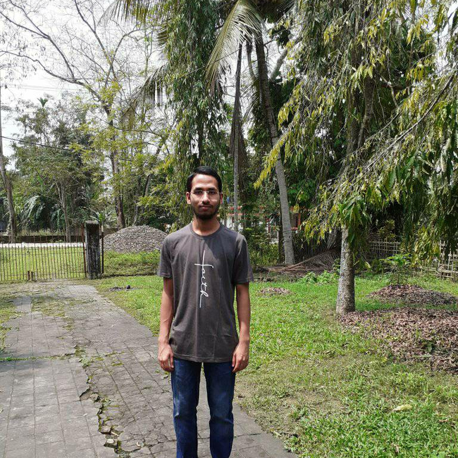
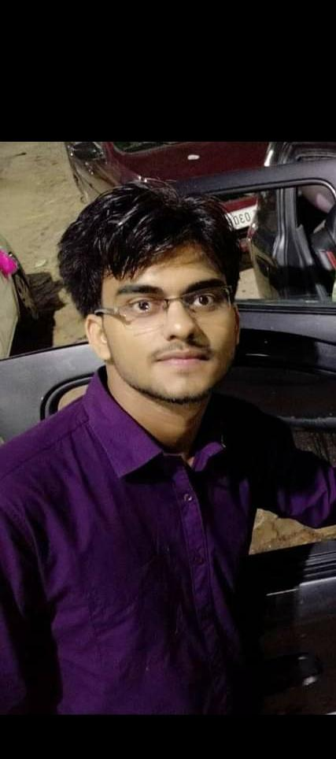

About This Site
Farmers are the backbone of country's economy. But, they do face a lot of problems, due to poor education system and financial management system provided to them. Our site FarmChamps tries to cover some part of the requirements to provide a better opportunity to the massive agro industry.
Members

Hello Everyone, I'm Partha Pratim Deka.I currently live in assam, India and I'm a full-time
student pursuing bachelor of technology in computer science at national institute of technology, silchar.

Hey viewers,I am Aryadeep Gogoi from CSE department. I live in Rongpur, Silchar, completed my 10th from
Tagore Public School, Rongpur, Silchar and my 12th form Ramanuj Gupta junior College, Ambicapatty, Silchar. I am
currently pursuing B. Tech. at CSE from NIT Silchar. My hobbies are reading, singing and coding.

I am Anupam Das from CSE department. I live in Rongpur, Silchar, completed my 10th from
Tagore Public School, Rongpur, Silchar and my 12th form Ramanuj Gupta junior College, Ambicapatty, Silchar. I
am
currently pursuing B. Tech. at CSE from NIT Silchar. My hobbies are reading, singing and coding.

Hi, I am Rupantar Borphukan pursuing Bachelor of Technology from NITS in Electronics & Instrumentation
engineering department. I am from in Moranhat, Assam.I am Web Development enuthiast and love coding.
Also, play Chess and Badminton.

Hi there, Shubham Kumar this side.I am undergrad in NITS from CSE department.Done my 10th from
St. Xaviers public school and 12th from college of commerce patna.My hobby is to play cricket, read books, coding, love to sing, dance as well as acting.